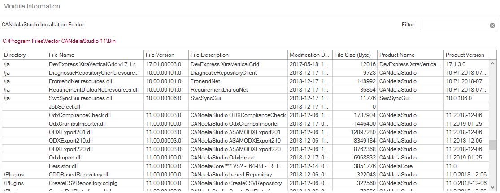

[MENU-R1260] In Ribbon Tab File - Product Information, the Module Information shows information about executable files in the CANdelaStudio installation folder.

Module Information
Shows the path to the CANdelaStudio installation folder.
Click the hyperlink to open an Explorer window on the folder.
Enter a filter term, to be applied to all shown columns.
Restricts the list to CANdelaStudio plug-ins (from the Plugins subfolder).
Shows module details in additional columns (see chapters below):
Shows the relative path (subfolders) of the module within the CANdelaStudio installation folder.
Shows the file name of the module, ...
.dll (typically).cdlplg (for the common plug-in type CDLPLG for CANdelaStudio versions up to 8.2)Shows the file version information from the version resource (if available).
Shows the modification time, i.e. date and time (UTC) the file has been last modified. The info is from the file system.
Note: before 8.5 SP2 (CDS-41017), the list showed the creation time.
Shows the product name and product version information from the version resource (if available).
Shows the file size (number of bytes) from the file system.
Shows the file description from the version resource (if available).